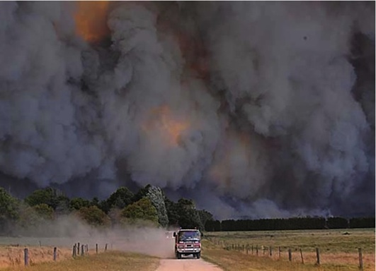

A large bushfire can cause multiple direct impacts:
on life and property, on the survival of fauna populations, on water resources, and indirectly on
government budgets and insurance costs. A large bushfire will also generate huge amounts of smoke.
CLICK ME!
Impact of bushfire on:
The Community

2003 Canberra fire disaster: the cost to insurers alone was $257 million
(The West Australian, 13 Feb, 2003). The total cost of the fires, including
the cost of suppression measures and lost productivity, would be much greater
than this figure. Add to it the loss of life, personal trauma, loss of invaluable
personal possessions and destruction of scientific equipment and data from the
Mt Stromlo Observatory, and the ramifications of such disasters start to become apparent.
2009 Victorian disaster: An estimate of the final cost of this bushfire awaits the
final report of the Royal Commission, but is likely to exceed a billion dollars.
2004 and 2007 Victoria bushfires: There were very severe and extensive Victoria bushfires
in Victoria in 2004 and 2007. The 2007 fires burned for several weeks and covered an area of
about one million hectares. A recent unofficial estimate of the costs, which includes the damage
to forests and property, as well as the costs of suppression, is over $900 million. With those
sorts of losses, one might expect the State government to review its whole approach to bush
fire management.
Sydney has experienced a series of lesser, but still serious, bushfire disasters since 1994.
In some respects most Australian city fringes and country towns have become more prone to bushfire
damage over the past 30 or so years, with the proliferation of rural lifestyle smallholdings and
natural vegetation reserves that are preserved, rather than actively managed. Many people who move
into rural smallholdings have little awareness of bushfire issues and the threat posed by unmanaged
native vegetation.
Forests
Of course, the forests incinerated by these intense bushfires also suffer great damage.
Unlike the usual description employed in the media, most native forests are not “destroyed” by wildfire.
Some are. Ash-type eucalypt forests are killed in this way, as the 1939 Victorian fire disaster clearly
demonstrated. Drier forest types, such as jarrah in WA are not destroyed, although they are severely
damaged and many trees are killed by high intensity bushfires.
Although some individual trees may die, the forest cover is not removed in a wildfire. In a large bushfire,
however, the total number of trees killed can be very large. In the 2005 Perth Hills fire, for example, it was
estimated that over 1.5 million trees were killed outright.
Most eucalypts have a number of specialized features that enable recovery from intense fires.
The remaining trees are, however, damaged in a number of ways. The cambium (the growth layer under
the bark) may be killed in one side of the bole, resulting in “dry sides” which are subsequently prone
to insect attack, degrading the timber for almost any use. Rots also gain entry via dry sides and burnt
limbs. Trees that already have “hollow butts” will often burn out completely and fall, and new hollow butts
will be created when a dry log burns alongside a standing tree. The upper parts of saplings and small trees
are often killed so that the stems become malformed, thus reducing their potential commercial value, as well
as permitting access by damaging fungi and insects.
Wildlife
Intense bushfires cause the death, by incineration or smoke suffocation, of large numbers of native
animals and insects that are unable to avoid the flames. Microsites (i.e. small areas of different
nature from the general area) that do not burn under low intensity burns are incinerated and there
are thus no refugial areas left for fire sensitive flora or fauna, or for subsequent recolonisation
after the fire. Any animals that are able to take refuge in holes in the ground or in logs are
usually quickly lost after a bushfire as they no longer have any cover from predators.
By contrast a mild fuel reduction burn causes very little damage. The usual objective is to burn
only about 70% of an area, so that there is a patchwork of small areas unburnt in which insects and
animals take refuge and from which later move out to recolonise the surrounding regenerating area.
Unburnt plants in these patches also seed into adjacent areas. The fire also stimulates the germination
of many species from seed stored in the soil. Other species of understorey plants regrow rapidly from
rootstocks.
The large aerial extent of severe bushfires means that, unlike low intensity fuel reduction burning
where any fauna losses are quickly made up from surrounding unburnt forest, there are wholesale fauna
losses. The potential for total loss of a rare and endangered species is clear. The larger native fauna
generally outrun a wildfire, but sometimes even they are caught.
Water Catchments
High intensity wildfires have very adverse effects on water supply catchments. The immediate impact is a
great increase in runoff from the next rainy period, due to the lack of interception by tree and understorey
foliage. While this may appear to be a benefit for dam storage, in fact it is not, as it is accompanied by
extensive soil erosion and the transport of large quantities of silt and ash into the water storage facility.
Removal of the tree canopy exposes the soil to erosion with loss of soil fertility and wash of silt
into dams. The ash is also highly detrimental to water quality and can actually cause a dam to be withdrawn
from the supply system. This happened in Canberra after the 2003 fire disaster there. The silt and ash flow
can also damage or even destroy valuable stream gauging stations (see the paper presented by Colin Terry at
the Eaton Seminar in the Resources section).
In the large Perth Hills bushfire of 2005, monitoring of a Water Corporation experimental catchment showed
that water yield increased by a factor of 2.2 times in the first year, but then returned to normal afterward,
However, over 350 cubic meters of soil were deposited in the stream bed, silting up the stream and small pools.
Large amounts of silt and ash passed through into the Mundaring Weir. A survey by the Department of Environment
and Conservation found that aquatic diversity was significantly impaired in the wild fire area. Invertebrates in
the wildfire area were also much less diverse than those from areas that had been covered by a low intensity
fuel reduction burn.
It was estimated that between 1.5 and 2.3 million trees were killed outright by this high intensity bushfire.
The forest has therefore been significantly degraded by this one wild fire. It will take many, many years to
replace these trees.
Analysis by the Water Corporation of fuel reduction burn data and water flow over a 40 year period (1960-1999)
showed a stream flow increase of between 20-49% for two years after each burn, As most burning is carried out in spring,
when the stream zone is moist, there is minimal damage to vegetation and water quality. On the Gnangara Mound, recharge
to the water table increased for 5 years after a fuel reduction burn.